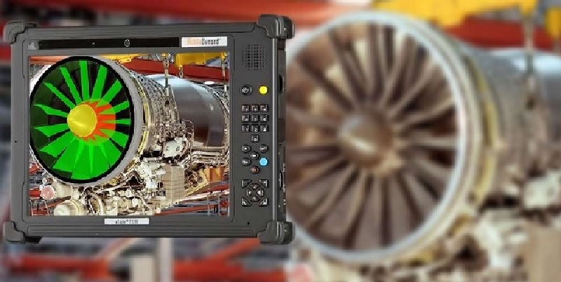
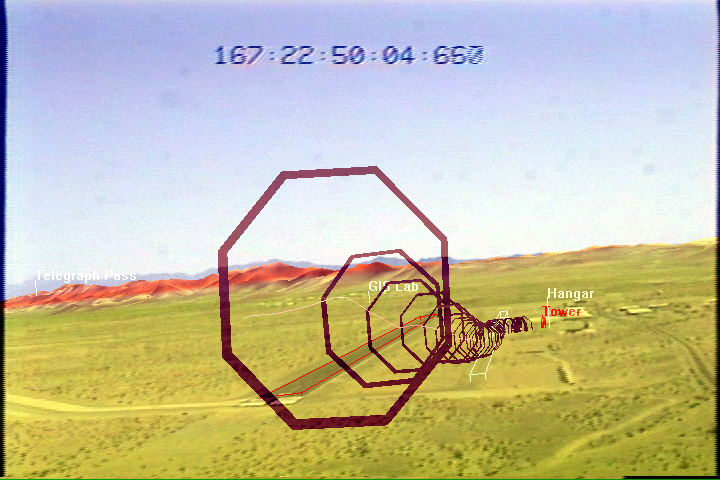

On sait désormais comment la réalité augmenté fonctionne mais aussi son Histoire !!
Sur cette page on parlera de son utilisation actuelle, quel domaine l'utilise ? Pourquoi faire ? Comment se manifeste-elle ? Plein de question auxquelles on va essayer répondre...
Commençons d'abord avec cette partie nommé "Création de solide". Effectivement elle est très vague mais la plupart des utilisations se rassemble en plusieurs grandes familles, celle qui viennent aider l'utilisateur et
celle qui créer des solides pour combler l'imagination de l'utilisateur, bien entendu on va parler de celle-ci.
Quel domaine utilise donc la "création de solide" ? Et bien énormément ! Des exemples ? Le patrimoine, l'éducation, les sciences, les industries et même la cuisine ...
Chacun de ces domaines l'utilise différement: Le patrimoine s'ent sert pour recréer des lieux détruits qui ont existé dans l'histoire comme par exemple le chateau fort disparu de Cherbourg (Vidéo du Chateau:
lien 4) où l'on nous montre à quoi ressemblerai la ville si il existait encore.
Pour l'éducation c'est assez similaire, les enfants on besoin d'un support pour pouvoir mieux apprendre (apprendre en s'amusant est toujours plus productif que si on y est forcé) et mieux imaginé les choses après,
que ce soit visuel où auditif. Surtout que l'informatique dans les écoles se développe de plus en plus grâce à l'arrivée des tablettes personnels.
La science ,quant à elle, utilise le même système que les industries et la cuisine. La RA leur permet de créer une image avec ce qu'il ont besoin de savoir: dans la medecine, on pourrait imaginé une fracture mais
mieux vaut avoir l'image de cet fracture devant nous sur le corps du patient que dans la tête. De même que pour l'industrie, une machine défaillante aurait besoin d'être réparé avec de nouvelles pièces mais rien de
mieux que de connaître à l'avance le problème rencontré et connaître donc le nombre de pièces minimales nécéssaires pour subvenir à la réparation.
Cette famille est la plus connu surement et celle qui represente le plus la réalité augmenté de nos jours mais elle n'est pas là plus utilisé puisqu'elle subvient à des besoins bien spécifiques.
Dans ces cas là, on se rapproche de plus en plus de la partie suivante mais qui diffère sur plein de point, voyons ça ensemble !
Comme dit précédement, on pourrait croire que cette partie est similaire à celle du dessus mais en réalité, elle diffère de cette dernière.
Cette partie là traite plus de l'information et de la manière dont il faut s'en servir. Quand on parle "d'aide au calcul", on entend par là que la réalité augmenté affiche non pas des solides mais des chiffres et
des lignes. Pour mieux l'expliquer on va prendre un exemple: L'architecture, c'est elle qui se sert pleinement de la RA, en effet elle utilise la création de solide pour faire imaginer à ses client le rendu de leur résultat
mais aussi l'aide au calcul pour pouvoir ,comme son nom l'indique, aider les architectes dans leur calcul sur la taille des batiments, l'espace à utilisé avec l'immobilier...
Bien entendu la science s'en sert aussi ne serait-ce que pour donner encore plus d'information facilement et pour simplifier les calcul d'un ingénieur sur la construction d'un pont par exemple.
Malgré que cette partie soit condensé, elle l'une des fonctionnalités les plus utilisés dans le monde du travail.
Qui dit aide, dit navigation ! N'oublions pas que le GPS est une aide à la navigation mais imaginez ces indications sonores se transformer en indication visuelle... Et bien c'est ce que Google Maps utilise depuis 7
août 2019 cette fonctionnalité se nomme "Google Maps Live View".Le but du Live View est de faciliter l'utilisation des itinéraires avec Google Maps, et notamment de mieux s'orienter afin d'éviter de faire demi-tour,
si on se trompe de sens. L'application utilise donc la réalité augmentée, à l'instar du jeu Pokémon Go, pour afficher les directions à l'écran par-dessus l'image du monde réel. Il suffit d'orienter la caméra de son
smartphone vers une rue pour savoir s'il s'agit de la bonne direction à prendre.
Mais là on parle d'aide à la navigation terrestre...
Oui vous m'avez compris la réalité augmenté permet l'aide à la navigation... aériennes !!
Bien que l’aviation soit devenu courante ces jours-ci, elle est toujours passionnante et souvent dangereuse. Prendre un vol est devenu tellement banal qu’il est facile de prendre le voyage aérien pour acquis, mais
nous ne devons pas oublier le fait que le vol c’est être littéralement et simplement assis dans une chaise dans le ciel.
Pour les pilotes professionnels, l'une des plus grandes difficultés est de diriger un avion de manière exacte et sûre. Des études actuelles révèlent que jusqu'à 70 % des accidents d'avion sont dus à des erreurs de
pilotage. Le pilotage d'un avion exige de convertir des informations complexes fournies par des écrans bidimensionnels en un environnement 3D et à 360°. Pour consulter ces informations, les pilotes doivent également
quitter le ciel des yeux, ce qui favorise les risques d'erreur et augmente leur niveau de stress.
Grâce au port d'un casque, les pilotes pourront désormais accéder à des informations numériques 3D qui s'afficheront de manière naturelle dans leur champ de vision et qui leur permettront de prendre des décisions plus
rapides etplus pertinentes.
Tous ces sytèmes destinés à plein de besoin en deviennent presque un divertissent !
Tiens parlons-en de l'utilisation de la RA mais cette fois uniquement pour le divertissement
Et oui ! La réalité augmentée est aussi utilisée pour le divertissement, cela entre-autre force les gens ,fans de jeux vidéos, à sortir de chez soi pour faire de nouvelle rencontre. On a notemment un exemple
récent qui n'est autre que le jeu pokémon go qui nous servira de référence dans le divertissement avec la RA. Sortie en été 2016 et développé par Niantic, il est difficile d'être passé à côté du phénomène. Comme
pour tous les autres jeux pokémons, le but est d'attraper tous les pokémons, sorte d'animaux avec des pouvoirs, pour pouvoir remplir le pokédex, sorte d'encyclopédie de pokémon. Mais contrairement aux autres il faut
se déplacer dans la réalité pour pouvoir en croiser. C'est ainsi que se sont créés de gros rassemblement pour la capture de pokémons rares.
Un peu plus de 3 ans après, le jeu a perdu beaucoup d'utilisateur mais fonctionne toujours aussi bien avec des mises à jours régulières, ajoutant de nouvelle génération , de nouveau objet et bien d'autres ...
Mais alors c'est génial ?! On fait du sport, on rencontre des gens, on découvre, on s'amuse ! Quels sont ces problèmes dont on s'apercoit seulement après avoir essayé ?
Et bien nous allons voir ça en s'apuyant sur l'exemple ci-dessus.